本章学习目标（Objectives）
- 理解纹理坐标与把图像"贴"到三角形上的原理；
- 创建纹理资源、上传图像数据、用 SRV 在着色器中采样；
- 掌握放大/缩小过滤与 mip 贴图、四种寻址模式；
- 配置采样器（Sampler）；给地形与水面贴图。
光照解决"明暗"，纹理解决"细节"。一块石头模型的凹凸斑驳全靠贴图——GPU 显存的主体就是纹理。
9.2 纹理坐标（Texture Coordinates）
纹理是 2D 图像，坐标系 u 沿右、v 沿下，范围 [0,1]²（浮点可超界，交给寻址模式）。给每个顶点一对 (u,v)，三角形内部像素的 uv 由插值得到——相当于把纹理图上的三角形区域"拉伸粘贴"到 3D 三角形上。图集（Atlas）技巧：一张大图存多个子图，各顶点 uv 指到对应区域，减少纹理切换。
9.4 创建并启用纹理（Creating and Enabling a Texture）
- 用
DDSTextureLoad（书中示例库）从 .dds 文件读图像数据； - 创建默认堆纹理资源（ID3D12Resource，堆类型 DEFAULT）+ 上传堆拷贝；
- 为它创建 SRV（Shader Resource View，着色器资源视图）放进描述符堆；
- 根签名加描述符表参数（t0），绘制时
SetGraphicsRootDescriptorTable； - PS 里声明
Texture2D gDiffuseMap : register(t0); SamplerState : register(s0);后采样。
9.5 过滤器（Filters）
屏幕像素 rarely 对齐纹素（texel），采样要"插值"：
- 放大（Magnification）：1 纹素覆盖多像素。最近点采样（点采样，块状）vs 双线性（Linear）（4 邻域加权，平滑）；
- 缩小（Minification）：多纹素压进 1 像素会闪烁/摩尔纹。mip 贴图：预生成逐级减半的纹理链（原图的 1/2、1/4……），根据导数自动选层级；三线性（在相邻 mip 间再插值）消除层级切换硬边；
- 各向异性（Anisotropic）：倾斜视角（如看地面远处）质量最高，成本也最高。
9.6 寻址模式（Address Modes）
uv 超出 [0,1] 怎么办，四种模式：
- Wrap（重复）：取小数部分——瓷砖铺地最常用；
- Border（边框）：超出部分用指定边框色（渲染调试时超界一秒现形）；
- Clamp（钳制）：钳到边界像素——拉伸边缘；
- Mirror（镜像）：镜像重复。
9.7 采样器（Sampler Objects）
采样器把"过滤方式 + 寻址模式 + mip 参数"打包。DX12 里采样器既可用静态采样器（打包进根签名，最多 16 个），也可用动态采样器描述符堆（第 3 版书用静态）。配置示例：
CD3DX12_STATIC_SAMPLER_DESC wrap linearWrap( 0, // 着色器寄存器 s0 D3D12_FILTER_MIN_MAG_MIP_LINEAR, // 三线性过滤 D3D12_TEXTURE_ADDRESS_MODE_WRAP, D3D12_TEXTURE_ADDRESS_MODE_WRAP, D3D12_TEXTURE_ADDRESS_MODE_WRAP);
9.9 Crate 演示
给立方体贴木箱纹理：顶点加 uv 字段，PS 里 gDiffuseMap.Sample(gsamLinear, pin.Tex) 采样替换顶点色。光照 + 纹理 = 书中目前最好看的画面。
9.10 纹理变换（Transforming Textures）
uv 也可以乘矩阵（平移/旋转/缩放 uv 空间）：贴图滚动（流水/传送带）、旋转、重复缩放都在着色器里乘一个 TexTransform 矩阵实现。
9.11 Land Tex 与 Waves 演示
LandTex：山丘格网按世界坐标生成 uv（x·缩放, z·缩放），草砖纹理平铺——Wrap 模式的实战；顶点色再按高度混合出雪山效果。TexWaves：水面滚动 uv（时间驱动纹理变换）让海水"流动"。书中还演示了程序化 mip 链（每级不同颜色）帮助理解 mip 的作用，以及两张纹理逐纹素相乘的技巧（第 17 章拾取标记要用）。
本章小结
- 顶点 uv + 插值 = 把 2D 图贴到 3D 面；图集省纹理切换。
- SRV 让着色器读到纹理；采样器管过滤与寻址。
- 缩小用 mip 贴图（三线性），倾斜视角用各向异性。
- 寻址模式：Wrap / Clamp / Mirror / Border。
- 纹理变换矩阵驱动 uv 动画。
🖼️ 原书插图（20 张，点击展开）
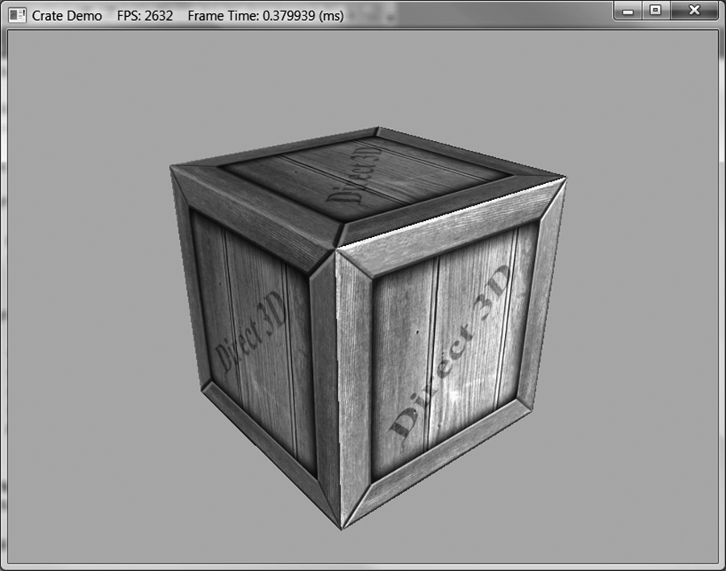
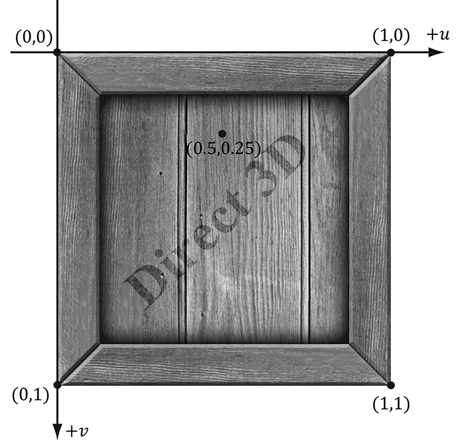
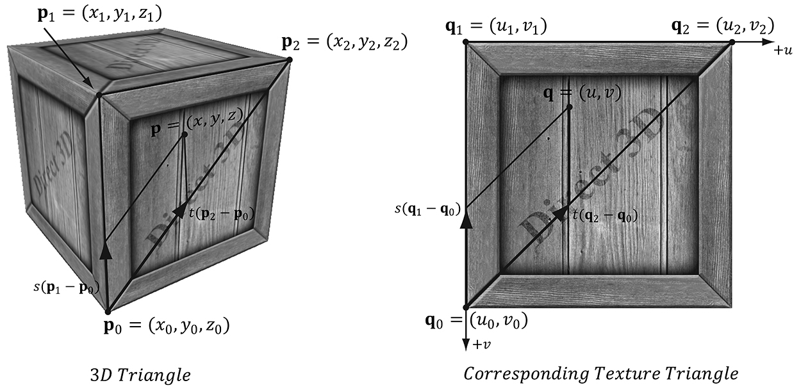
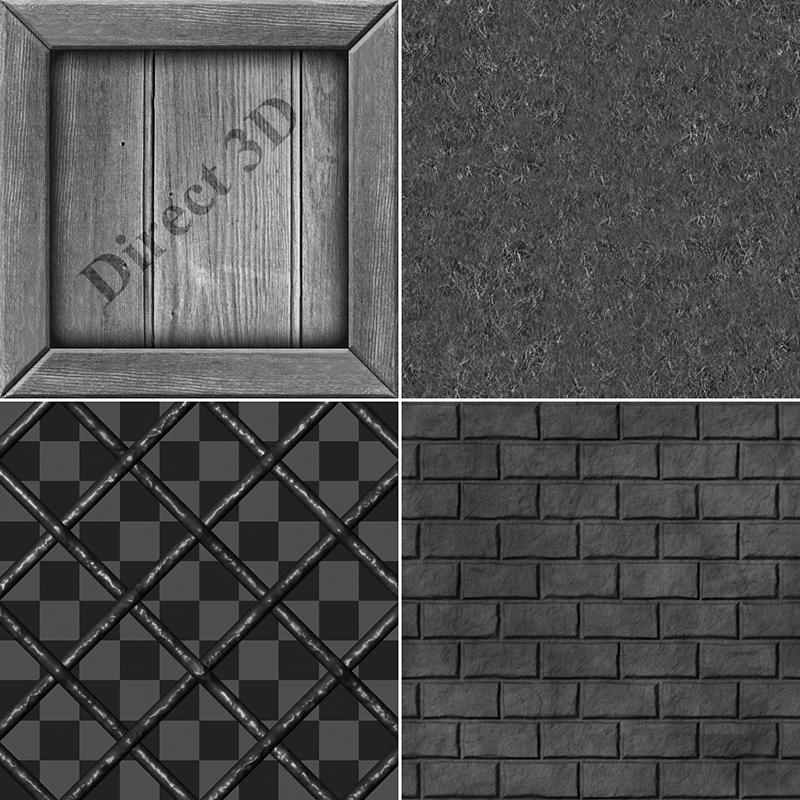
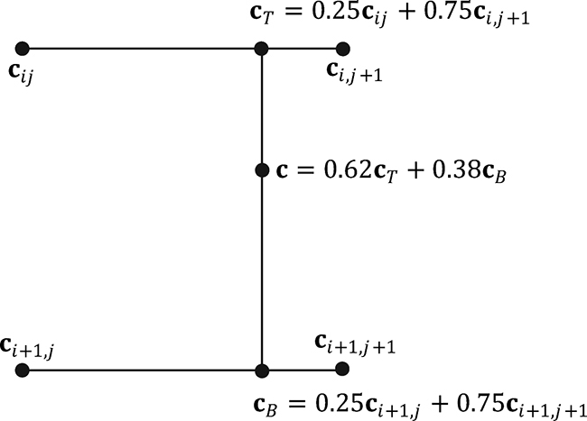
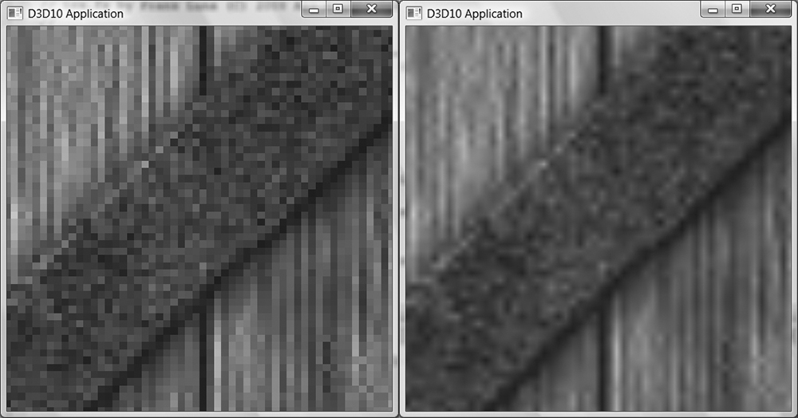
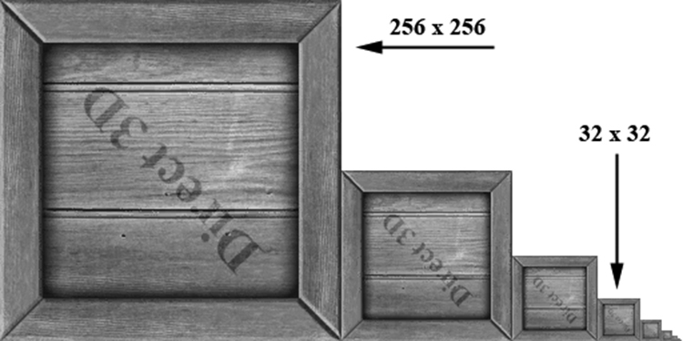
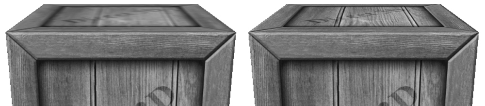
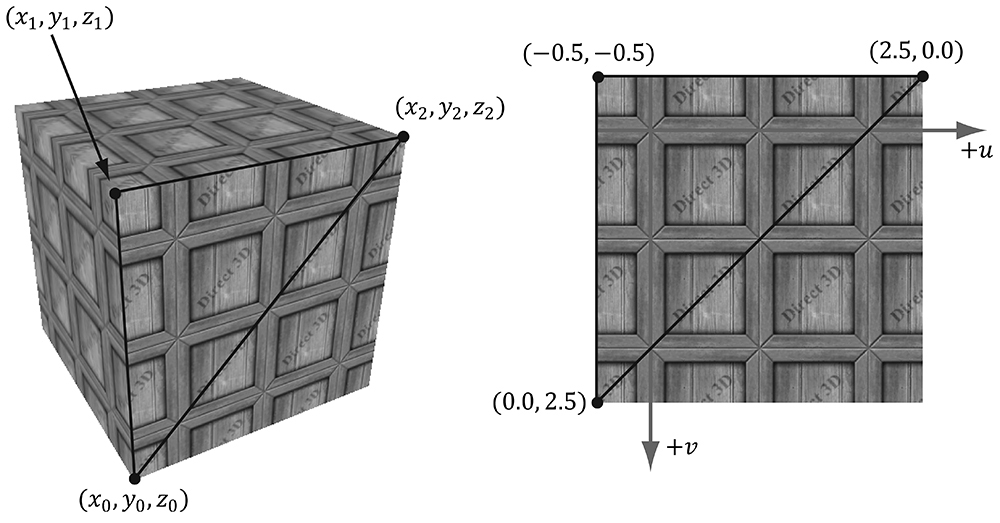
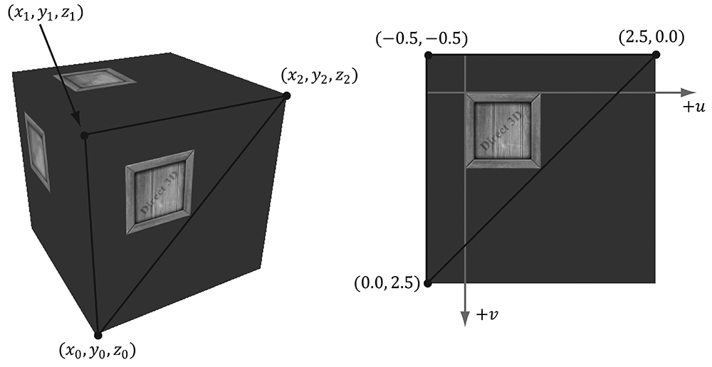
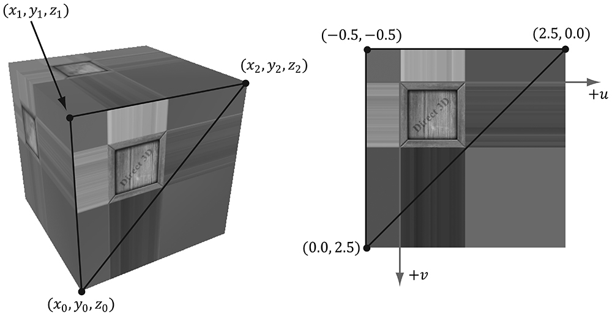
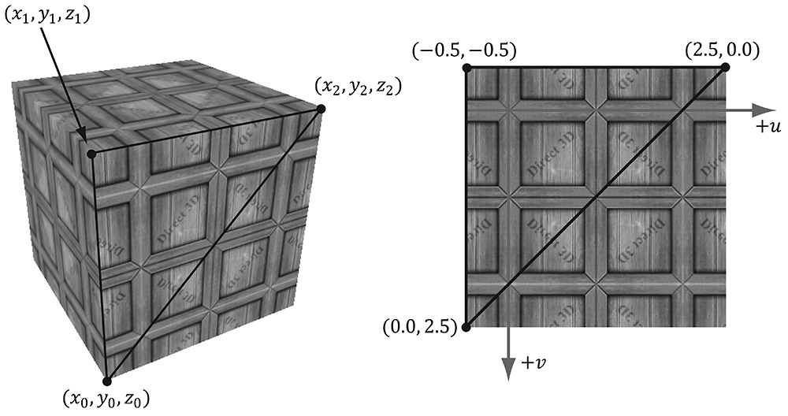
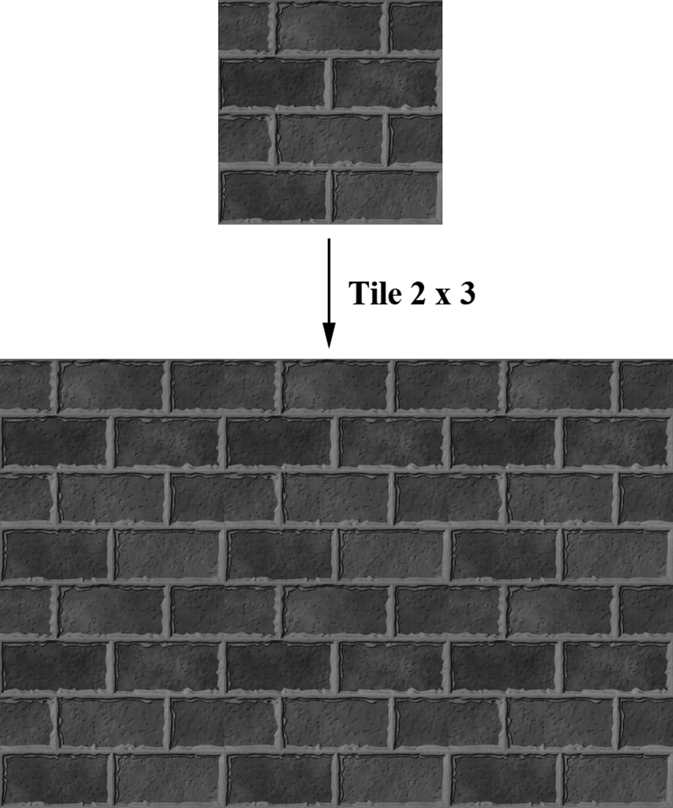
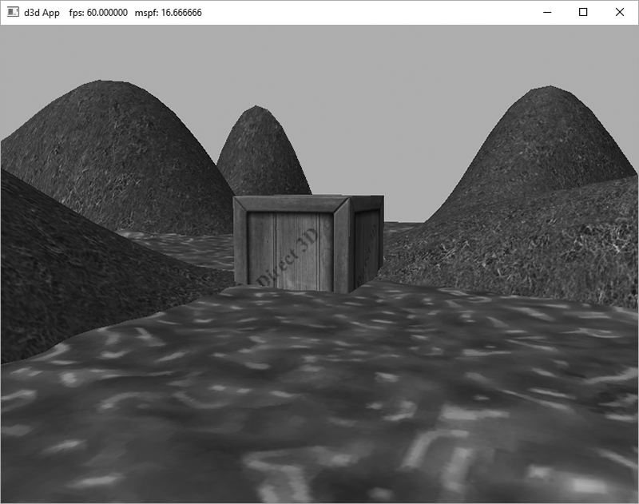
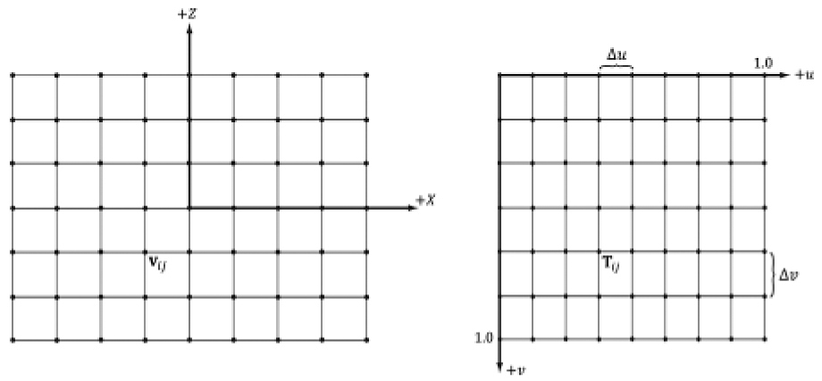
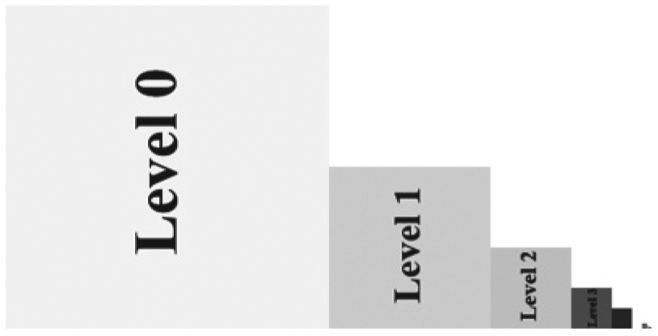
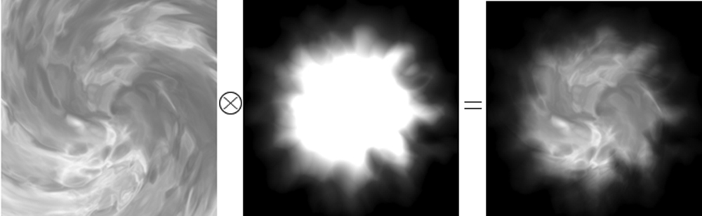
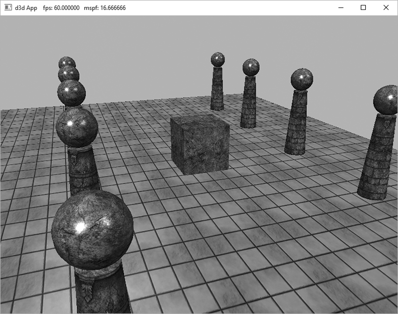
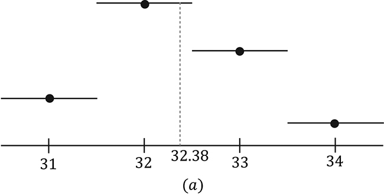
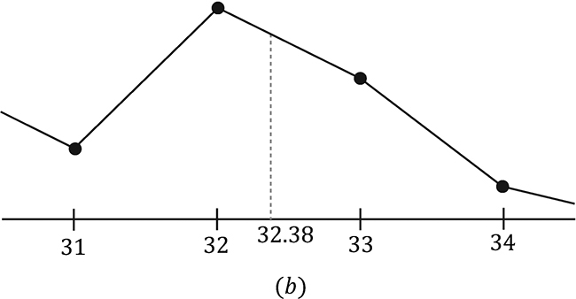